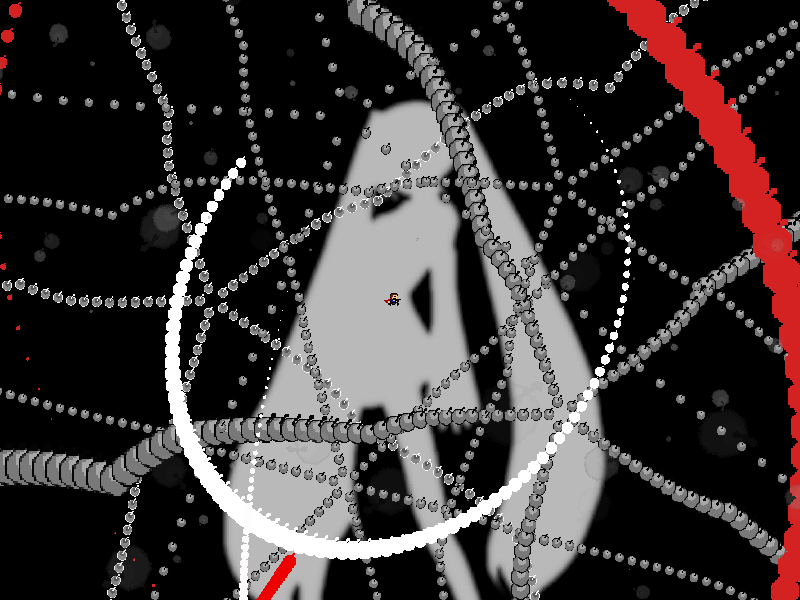
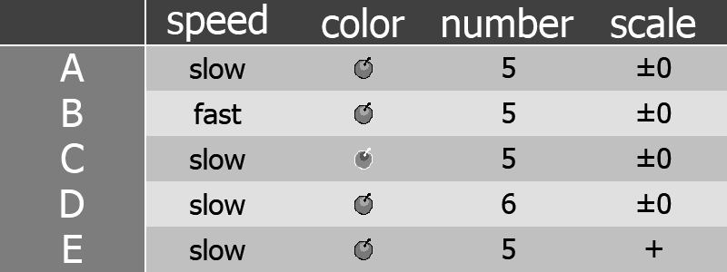
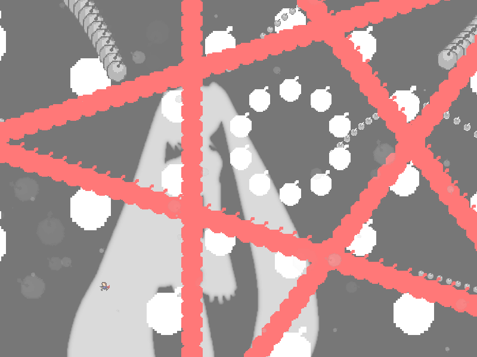
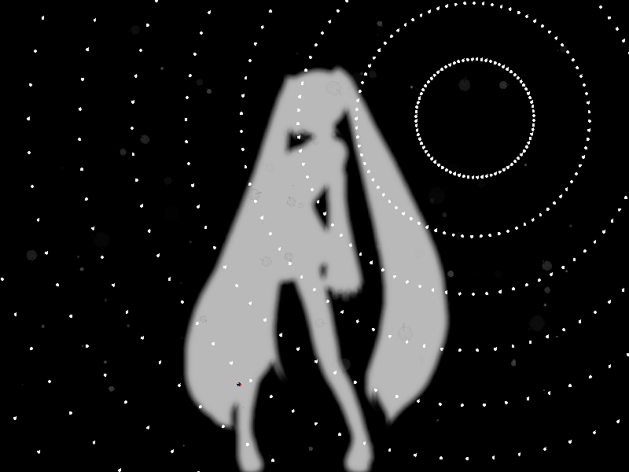
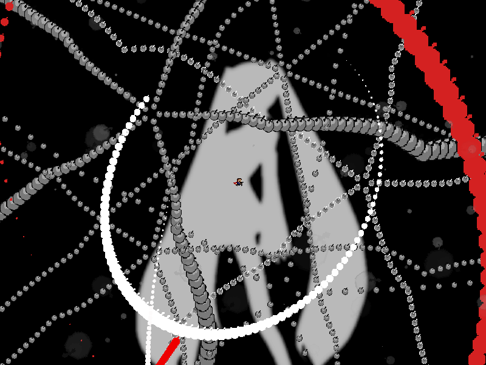

chapter4 - section9

| creator | segment | label | jump |
|---|---|---|---|
| NN | 0:54.30~1:00.80 | Q+P*A*S | infinite |
間違い探しを題材とした択一型の弾幕です。
fig.4-9.1のA~Eに示す、発射源が異なる5つの自機外し弾幕に関して、これらは速さ・色・方向数・大きさについてそれぞれ二者択一のパラメータを持ちます。
場に存在する5つの自機外し弾幕のうち、速さ・色・方向数・大きさの各種パラメータに関して「仲間外れ」となるものがそれぞれ1つずつ存在しています。
速さ・色・方向数・大きさについてそれぞれ「仲間外れ」となるものを排斥した上で最後まで残る、場において最も特徴がないといえるものを見極めることを目的としています。
fig.4-9.1に示す状況に関して、それぞれの自機外し弾幕における各種パラメータをまとめた表をtable.4-9.1に示します。
この場合、速さについてはB、色についてはC、方向数についてはD、大きさについてはEがそれぞれ「仲間外れ」であり、この場において最も特徴がないといえるものはAであることが確認できます。

0:57.30において生成される星型弾幕および同心円状弾幕に関して、これらは中心が先述の最も特徴がない自機外し弾幕（この場合ならばA）の中心と一致しており、また角度については画面中央に対して最も開く形状をとります（fig.4-9.2）。
なお、0:57.30~1:00.80においては画面外被弾判定が存在しません。

0:57.70以降生成される同心円状弾幕（fig.4-9.3）に関して、これらは射出速度が各時刻におけるプレイヤーの位置を基準として決定されます。
具体的には、それぞれの円形弾幕に関して射出速度が生成時の中心とプレイヤーとの距離の1/6として決定され（生成から6step後に生成時のプレイヤーの位置に到達する）、またこれらの円形弾幕は各時刻において生成されます。
したがって、発射源から離れ続ける（または近づき続ける）ことですべての円形弾幕を回避することができます。
0:57.70における発射源が星型弾幕の中心と一致していること、また発射源が画面中央に対して遠ざかることと合わせて、星型弾幕を回避した方向にそのまま移動し続けることによって回避可能であることを利用することで攻略がしやすくなるかもしれません。

また、5つの自機外し弾幕の中心の配置に関してはfig.4-9.4.aおよびfig.4-9.4.bに示す2通りのみが存在します。

